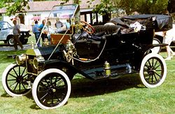

Első autók Az első benzinmotoros automobilt Friedrich Benz készítette Mannheimban 1886-ban. Tőle függetlenül ugyanekkor Gottlieb Wilhelm Daimler és Wilhelm Maybach feltalálópáros is feltalálja a maga automobilját Cannstattban, nem messze Stuttgarttól. Benzet a technológia újszerűsége érdekelte, ezért egy teljesen maga szerkesztette, háromkerekű járművet konstruált: a Benz Patent-Motorwagent. Daimler és Maybach ezzel szemben már egy használható, praktikus járműben gondolkodott, ezért egy egyedi kivitelben készíttetett, négykerekű lovaskocsiba építették motorjukat.
Üzemanyag- és meghajtástechnológiák
A belső égésű motorok két klasszikus üzemanyaga a benzin, illetve a gázolaj (dízelmotorok). Újabban több irányban is történnek kísérletek egyéb üzemanyagok igénybevételére. Ilyenek a gáz- és biomotorok (LPG, CNG, biodiesel), valamint a hidrogén. Üzemanyag tekintetében a hidrogén a hagyományos belsőégésű motorszerkezetben elégethető, mint pl. a Mazda Wankel hidrogén autóban, ill. a BMW Hydrogen 7 típusban, vagy a Toyota és társai fejlesztésű típusban.
Nem belsőégésű motorok terén az elektromos meghajtás érdemel figyelmet. Bár már figyelemreméltó kísérletek folynak velük, széles körben elterjedni eddig nem tudtak. Nemcsak ár-, hanem hatósugár-problémák is vannak velük. Az utóbbi leküzdésére kísérleteznek hibrid meghajtással is, amikor a belsőégésű motor mellett mellékmeghajtásként elektromos vagy gázmeghajtás is beépítésre kerül. Nem belsőégésű technológia az üzemanyagcellás hidrogén üzemanyagú rendszer, mely égés nélkül, kémiai úton termel áramot. Érdekesség, hogy az elektromos motorok már a 19. században megjelentek, az ilyen meghajtású autók gyártása pedig már a 20. század legelején megkezdődött, de a technológia akkori rossz hatékonysága miatt ez nem sokkal később abba maradt.[6]
Az elektromos motor akkumulátorokban tárolt árammal működik, de sok hátárnya van: az akkuk drágák, nehezek, így az autó is, valamint elégtelen a hatásfoka és a már említett hatósugara. Energiatermelés szempontjából ma a primer energiából nagy részben égetéses technológiákkal fejlesztenek áramot, így vagy atomerőművi vagy napelemes áramtermelésre kellene áttérni a környezetvédelem érdekében. Különleges megoldásnak számít a háztartási méretű napelemes, tárolós rendszer, mely éjszaka akár autóakkumulátor töltésére is alkalmas (Nissan). Az elektromos hálózat energiatárolásához hozzájáruló elektromos autó rendszereket is alkalmaznak, pl. V2G Angliában. Bizonyos elektromos motorok napenergiával működnek napelemek segítségével, mint pl. a Pannonrider, vagy a spanyol PV-elemes tricikli (lásd: További információk).
Hibridautók: bevált, a gyakorlatban létező típusok mellett a hibrid technológia legfejlettebb kísérleti részének tekinthetjük a Formula–1-es autókat.
Gázautók: komprimált földgázzal vagy propán-bután gázzal működő autók jobb égési, kisebb környezetszennyezési tulajdonságúak, üzemanyaguk olcsóbb, mint a benzin (2013-ban 26%-kal volt olcsóbb). Az LPG-vel (propán-bután gázzal) működő autók itthon is szervizzel, tankolási helyekkel rendelkeznek. Régi, használt autók nagy fogyasztását lehet pl. LPG-vel olcsóbbá tenni. A német városokban a kibocsátási előírások szigorításával, a diesel autók közlekedési korlátozásai kapcsán aktuálissá váltak az Audi CNG (sűrített földgáz) üzemű típusai, pl. az Audi A4 g-tron, ill. A3 sportback.

T-modell